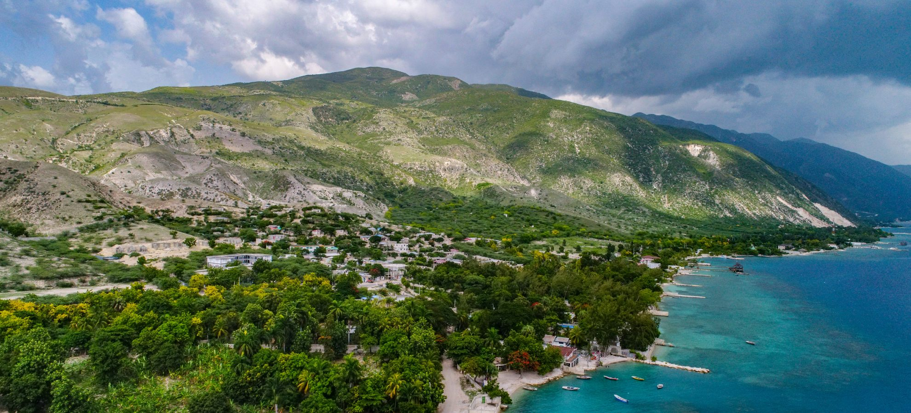
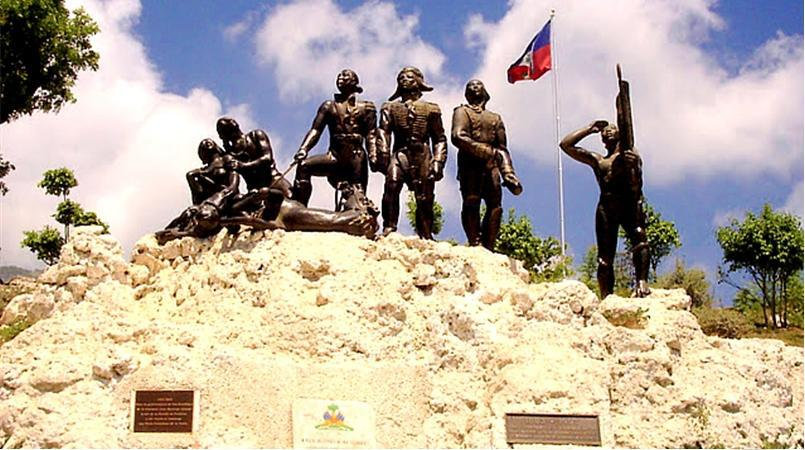
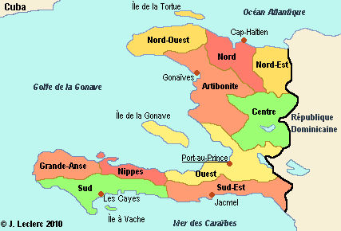

Ministère du tourisme
Ministère du tourismeA propos d'Haïti
- 
- 
- 
Haïti, première république noire et indépendante du Monde, signifie en langage Taïno « terre haute ». Elle partage l’île d’Hispaniola avec la République Dominicaine et couvre une superficie de 27.750 kms carrés avec un relief contrasté.
Le pays regorge de surprises. La faune et la flore ne sont en reste. Elles sont variées avec de majestueuses montagnes, des villes coloniales au charme prodigieux. Haïti a réussit à conserver des espèces qu’il n’est possible de voir que sur cette Ile magique
L’accueil des haïtiens sera toujours aimable, encore teinté de curiosité. Le pays offre de très nombreux attraits touristiques: des paysages fabuleux, des plages de rêve, le soleil, le ciel bleu, des couleurs, des saveurs uniques, un artisanat imaginatif et de qualité. Ici, Tradition et Modernité s’allient à merveille pour le plus grand plaisir des Voyageurs.
Haïti a retrouvé il y a quelques années le chemin de la démocratie et de la paix. Le pays regarde à présent son avenir avec optimisme et c’est justement parce que c’est un pays encore « neuf » qu’il est intéressant à visiter!
Haïti, Vivez l’expérience!
La richesse historique d’Haïti et les vestiges laissés par cette histoire mouvementée font de ce pays une contrée unique de la Caraïbe.
Deux étapes marquent définitivement cette particularité inégalable: la découverte de l’Amérique par l’arrivée de Christophe Colomb en 1492 sur l’île de l’Ispañola, pour ensuite devenir à la fin du XIXe siècle la première République Noire du Monde.
Les amateurs d’histoire y trouveront des endroits uniques. Fruit de cette indépendance, la Citadelle s’érige comme la plus grande forteresse des Amériques, et qui, avec le Palais et la chapelle de Sans Souci constituent un ensemble d’architecture qualifiée de Patrimoine Mondial par l’UNESCO.
PATRIMOINE
Parc national Historique
Créé par décret présidentiel en 1978, le Parc National Historique est situé dans la zone des massifs du Nord. Il abrite la Citadelle La Ferrière l’une des plus imposantes forteresses du continent bâtie au XIXe siècle par le roi Henry 1er, le Palais Sans Souci dont les vestiges comptent la chapelle royale aujourd’hui appelée Eglise Paroissiale de Milot, les jardins de la reine, le Palais du roi. Ces symboles universels de liberté situés à l’intérieur du parc national historique dans un cadre naturel splendide formé de pics rocheux sont recouverts par une végétation luxuriante, ils représentent pour les Haïtiens les premiers monuments de leur indépendance. Source UNESCOLa grimpée du sentier de la Citadelle est raide (45 minutes). Pour les moins sportifs, les habitants de la zone proposent des ânes ou des chevaux pour faciliter la montée. Vous trouverez aussi le long du chemin des vendeurs d’artisanat local et vous pourrez acheter des souvenirs à rapporter à vos amis et proches.
Centre Historique de Jacmel
Le centre historique, composé de belles maisons de particuliers et de commerce avec balcons et arcades, construites pour la plupart au début du 20e siècle, offre un ensemble bien conservé et une rare harmonie architecturale. Ce cadre bâti sert de théâtre à un patrimoine immatériel tout aussi riche, caractérisé par des fêtes, des festivals et des expositions d’art et d’artisanat qui animent la ville tout au long de l’année.
Marché en Fer
Le Marché en Fer, ou Marché Vallière ou encore Marché Hyppolite est considéré comme une œuvre architecturale d’une incontestable valeur artistique et historique. Il est perçu « comme le monument emblématique de Port-au-Prince ». Inaugurée en novembre 1891, cette structure vieille de 121 ans, récemment rénovée rappelle encore par son style les anciennes Halles de Paris. Le Marché en Fer est un site historique plein de vie, situé en plein cœur de la ville où touristes et consommateurs locaux s’y mêlent pour acheter tout ce que consomme habituellement une ville, en fait de provisions alimentaires et aussi de produits artisanaux.
Fort Jacques
Au lendemain de la proclamation de l’indépendance, Alexandre Pétion fait construire, à l’aide de corvées, au quartier du Grand Fond, à une dizaine de kilomètres de Port-au-Prince, une fortification qu’il baptise du nom Fort Jacques, en l’honneur de Dessalines. C’est un des forts à avoir le mieux résister aux injures du temps. Cet ouvrage, érigé suivant le concept établi par Vaubants pour défendre les positions stratégiques, n’a cependant servi de support à aucune lutte armée. Il reflète l’image du cadre où vivaient les garnisons de l’époque, enfermées dans un ouvrage fortifié, et la maîtrise des constructeurs à adapter à la morphologie des sites montagneux l’art des fortifications. Depuis le Fort Jacques, on peut voir entièrement la baie de Port-au-Prince. Chaque année, le 18 mai (anniversaire de la création du drapeau haïtien), un pèlerinage, une fête foraine et des concerts de musique sont organisés dans ce lieu.
Fort Drouet
Le Fort Drouet fait partie d’une vingtaine d’ouvrages militaires construits en Haïti après l’indépendance en 1804. Ce Fort est une imposante construction constituée d’un épais mur d’enceinte faisant par endroits plus de cinq mètres de hauteur, percé de nombreuses meurtrières pour le tir au fusil et d’embrasures à canon.Positionnée sur une éminence, cette fortification à cinq bastions, dont le plan ressemble fortement à celui du fort Madame à Marchand-Dessalines, contrôle un très large périmètre et joue le rôle de vigie portant ses vues à la fois sur le golfe de la Gonâve et la vallée de l’Artibonite. Le fort Drouet établit également un contact visuel avec le fort Delpêche (1804) situé vers l’Ouest dans les mornes surplombant Williamson et Carriès. (Source ISPAN)